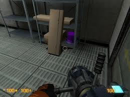

OK, so since it took me a while to muddle through this (and to physically do it), I thought I’d post a summary of everything I now know about this achievement and getting it done. There are spoilers in the description below; I’ll try to keep them to a minimum but some things just have to be explained.  If you’ve been researching this (like I did), then you’ll already know most of this…I’m just kinda putting it all in one place.
If you’ve been researching this (like I did), then you’ll already know most of this…I’m just kinda putting it all in one place.
The achievement, “Rare Specimen”, is to send the “Hidden Hat” through the Xen portal at the end of the “Lambda Core” chapter.
First off, there are two hats in the game, both in the “Lambda Core” chapter:
#1: During the second fight with the Black Ops Assassins (the hat is inside the yellow crate in the center of this screenshot, that my crosshairs are on)
#2: During the “tower of rotating platforms” part, accessed with the teleporter sequence “2, 5”. This is not my screenshot; I just can’t bring myself to use the gluon gun on a living creature.

From what I’ve read, this second hat will not work to trigger the achievement. I don’t know if this is by design or due to a bug, but that seems to be something a lot of people are encountering. So, if you’re really serious about doing the large amount of tedious carrying that this requires, be aware that you should grab the hat after that second Assassin fight.
The second issue that a lot of people (myself included) are running into is that when you send the hat through the first teleporter in the “tower of rotating platforms” area, you can’t pick it up again once you follow it through and are standing on that first rotating platform. You can shoot it, but you can’t pick it up. Well, after pulling my hair out for a while (and consulting the InterPhone) I managed to get the ***** hat through the ***** teleporters…TWICE (more on that in a minute  ). The trick, as “NateDude” on facepunch.com points out, is to hit the hat with the crowbar and then grab it. He doesn’t really expand on that though, so here’s where you can benefit from my OCD trial and error.
). The trick, as “NateDude” on facepunch.com points out, is to hit the hat with the crowbar and then grab it. He doesn’t really expand on that though, so here’s where you can benefit from my OCD trial and error.
Basically, there’s something about the surface of that particular platform (the other platforms don’t have the problem, thankfully) that prevents you from picking the hat up while it’s on it (some kind of bug, presumably). The trick is to swat at the hat with the crowbar, which knocks it into the air, thus allowing you to grab it there. Obviously you have to be very quick about it…basically you want to hit the fire button (to swing the crowbar) and then the use key (to grab the hat) as quickly in succession as you physically can. It might take a few tries, but trust me, it’s possible.
OK, that’s all the actual info…good luck! I’m also including a couple of tips to make it easier that I worked out after doing this a zillion times, as well as a couple of things to be aware of so you don’t think you’re doing it wrong.
As you’re ascending the tower, I personally find it helpful to walk as far out on the little “ledges” of the center column as possible, face the teleporter in the center, and look straight up to watch for the platform to rotate under your “destination” teleporter. That way, you can just walk forward while bringing your view down a little (to ensure the hat goes through the teleporter before you do).
Be careful that your hat is always upright (right-side up or upside down doesn’t seem to matter) when you send it through a teleporter. If it’s on its side, it will roll off the platform after teleporting 99% of the time. If it gets on its side, you can hold it above the railing on a rotating platform so that when you drop it, it hits the railing and turns upright (just don’t forget to double-tap the use key so you drop it and then immediately catch it again! ).
Teleporting with the hat seems to dramatically increase the chances of randomly dying when standing on those rotatinng platforms. I’ve never been able to find the hat when it happens (e.g. I look for it before I just die for no reason), and I have a suspicion that it’s some kind of telefrag. Whatever, the point is, if you notice its happening a lot, just be aware that it’s “normal”.
It’s also normal to constantly fail to make the jumps, because you can’t run while you’re holding something. You’ll overshoot a lot as well and wind up going straight into the teleporter. Fun!
One last, personal note, that I’m simply including for your amusement: earlier I said I did it twice…well, it wasn’t because of a botched savegame. It was because I went to the “2, 5” room where the second hat is, grabbed it, and then wound up taking it back to the beginning of the tower. Because I’m an IDIOT.
And then, I decided, you know what? I’m gonna go all the way with this. I’m taking BOTH HATS to the Xen teleporter, and I’m going to make sure I leave the first one right-side up and the second upside down so I know which one is which when I get there:


{kind=link}